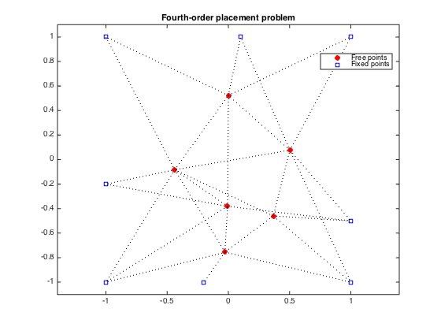
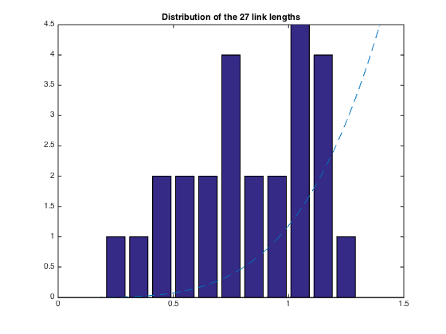

% Section 8.7.3, Boyd & Vandenberghe "Convex Optimization" % Original by Lieven Vandenberghe % Adapted for CVX by Joelle Skaf - 10/24/05 % (a figure is generated) % % Placement problem with 6 free points, 8 fixed points and 27 links. % The coordinates of the free points minimize the sum of the squares of % Euclidean lengths of the links, i.e. % minimize sum_{i<j) h(||x_i - x_j||) % where h(z) = z^4. linewidth = 1; % in points; width of dotted lines markersize = 5; % in points; marker size fixed = [ 1 1 -1 -1 1 -1 -0.2 0.1; % coordinates of fixed points 1 -1 -1 1 -0.5 -0.2 -1 1]'; M = size(fixed,1); % number of fixed points N = 6; % number of free points % first N columns of A correspond to free points, % last M columns correspond to fixed points A = [ 1 0 0 -1 0 0 0 0 0 0 0 0 0 0 1 0 -1 0 0 0 0 0 0 0 0 0 0 0 1 0 0 0 -1 0 0 0 0 0 0 0 0 0 1 0 0 0 0 0 -1 0 0 0 0 0 0 0 1 0 0 0 0 0 0 -1 0 0 0 0 0 0 1 0 0 0 0 0 0 0 0 0 -1 0 0 0 1 0 0 0 0 0 0 0 0 0 0 0 0 -1 0 1 -1 0 0 0 0 0 0 0 0 0 0 0 0 1 0 -1 0 0 0 0 0 0 0 0 0 0 0 1 0 0 0 -1 0 0 0 0 0 0 0 0 0 1 0 0 0 0 0 -1 0 0 0 0 0 0 0 1 0 0 0 0 0 0 -1 0 0 0 0 0 0 1 0 0 0 0 0 0 0 0 0 0 -1 0 0 0 1 -1 0 0 0 0 0 0 0 0 0 0 0 0 1 0 0 0 0 -1 0 0 0 0 0 0 0 0 1 0 0 0 0 0 0 0 -1 0 0 0 0 0 0 1 -1 0 0 0 0 0 0 0 0 0 0 0 0 1 0 0 0 0 -1 0 0 0 0 0 0 0 0 1 0 0 0 0 0 -1 0 0 0 0 0 0 0 1 0 0 0 0 0 0 0 -1 0 0 0 0 0 1 0 -1 0 0 0 0 0 -1 0 0 % error in data!!! 0 0 0 0 1 -1 0 0 0 0 0 0 0 0 0 0 0 0 1 0 -1 0 0 0 0 0 0 0 0 0 0 0 1 0 0 0 0 -1 0 0 0 0 0 0 0 0 1 0 0 0 0 0 0 0 0 -1 0 0 0 0 0 1 0 0 -1 0 0 0 0 0 0 0 0 0 0 1 0 0 0 0 -1 0 0 0 ]; nolinks = size(A,1); % number of links fprintf(1,'Computing the optimal locations of the 6 free points...'); cvx_begin variable x(N+M,2) minimize ( sum(square_pos(square_pos(norms( A*x,2,2 ))))) x(N+[1:M],:) == fixed; cvx_end fprintf(1,'Done! \n'); % Plots free_sum = x(1:N,:); figure(1); dots = plot(free_sum(:,1), free_sum(:,2), 'or', fixed(:,1), fixed(:,2), 'bs'); set(dots(1),'MarkerFaceColor','red'); hold on legend('Free points','Fixed points','Location','Best'); for i=1:nolinks ind = find(A(i,:)); line2 = plot(x(ind,1), x(ind,2), ':k'); hold on set(line2,'LineWidth',linewidth); end axis([-1.1 1.1 -1.1 1.1]) ; axis equal; title('Fourth-order placement problem'); % print -deps placement-quartic.eps figure(2) all = [free_sum; fixed]; bins = 0.05:0.1:1.95; lengths = sqrt(sum((A*all).^2')'); [N2,hist2] = hist(lengths,bins); bar(hist2,N2); hold on; xx = linspace(0,2,1000); yy = (6/1.5^4)*xx.^4; plot(xx,yy,'--'); axis([0 1.5 0 4.5]); hold on plot([0 2], [0 0 ], 'k-'); title('Distribution of the 27 link lengths'); % print -deps placement-quartic-hist.eps
Computing the optimal locations of the 6 free points... Calling SDPT3 4.0: 351 variables, 150 equality constraints ------------------------------------------------------------ num. of constraints = 150 dim. of sdp var = 108, num. of sdp blk = 54 dim. of socp var = 81, num. of socp blk = 27 dim. of linear var = 108 ******************************************************************* SDPT3: Infeasible path-following algorithms ******************************************************************* version predcorr gam expon scale_data HKM 1 0.000 1 0 it pstep dstep pinfeas dinfeas gap prim-obj dual-obj cputime ------------------------------------------------------------------- 0|0.000|0.000|4.3e+01|2.4e+01|4.6e+04| 2.700000e+02 0.000000e+00| 0:0:00| chol 1 1 1|0.595|0.843|1.7e+01|3.8e+00|2.7e+04| 4.321980e+02 -8.195067e+02| 0:0:00| chol 1 1 2|0.847|0.969|2.6e+00|1.3e-01|5.7e+03| 1.138396e+03 -9.843696e+02| 0:0:00| chol 1 1 3|0.850|1.000|4.0e-01|1.0e-03|1.3e+03| 3.149945e+02 -5.267314e+02| 0:0:00| chol 1 1 4|1.000|1.000|1.5e-07|1.0e-04|4.3e+02| 2.834780e+02 -1.472513e+02| 0:0:00| chol 1 1 5|0.907|1.000|1.5e-08|1.0e-05|1.1e+02| 7.599590e+01 -3.717591e+01| 0:0:00| chol 1 1 6|1.000|0.966|1.7e-09|1.3e-06|3.3e+01| 3.988795e+01 7.274760e+00| 0:0:00| chol 1 1 7|0.905|0.988|7.0e-10|1.2e-07|5.5e+00| 2.471875e+01 1.918303e+01| 0:0:00| chol 1 1 8|1.000|0.941|2.7e-10|1.6e-08|2.1e+00| 2.200913e+01 1.995624e+01| 0:0:00| chol 1 1 9|0.907|0.973|1.2e-10|1.5e-09|3.1e-01| 2.088816e+01 2.057402e+01| 0:0:00| chol 1 1 10|1.000|0.937|8.2e-15|2.1e-10|1.1e-01| 2.072219e+01 2.061382e+01| 0:0:00| chol 1 1 11|0.966|0.978|1.0e-14|1.5e-11|4.9e-03| 2.065005e+01 2.064515e+01| 0:0:00| chol 1 1 12|0.919|0.983|2.8e-14|2.2e-12|3.3e-04| 2.064663e+01 2.064630e+01| 0:0:00| chol 1 1 13|1.000|1.000|8.4e-12|1.0e-12|3.3e-05| 2.064635e+01 2.064631e+01| 0:0:00| chol 1 1 14|1.000|1.000|1.1e-12|1.5e-12|1.3e-06| 2.064632e+01 2.064632e+01| 0:0:00| chol 1 1 15|1.000|1.000|7.4e-12|1.0e-12|5.8e-08| 2.064632e+01 2.064632e+01| 0:0:00| stop: max(relative gap, infeasibilities) < 1.49e-08 ------------------------------------------------------------------- number of iterations = 15 primal objective value = 2.06463237e+01 dual objective value = 2.06463236e+01 gap := trace(XZ) = 5.78e-08 relative gap = 1.37e-09 actual relative gap = 1.36e-09 rel. primal infeas (scaled problem) = 7.42e-12 rel. dual " " " = 1.00e-12 rel. primal infeas (unscaled problem) = 0.00e+00 rel. dual " " " = 0.00e+00 norm(X), norm(y), norm(Z) = 1.5e+01, 2.8e+01, 4.6e+01 norm(A), norm(b), norm(C) = 2.0e+01, 1.2e+01, 6.2e+00 Total CPU time (secs) = 0.37 CPU time per iteration = 0.02 termination code = 0 DIMACS: 3.0e-11 0.0e+00 3.1e-12 0.0e+00 1.4e-09 1.4e-09 ------------------------------------------------------------------- ------------------------------------------------------------ Status: Solved Optimal value (cvx_optval): +20.6463 Done!
 